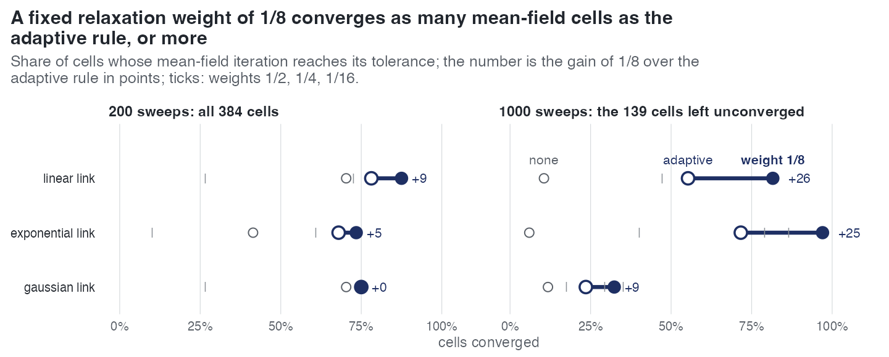
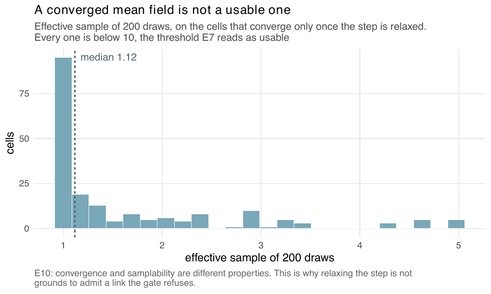
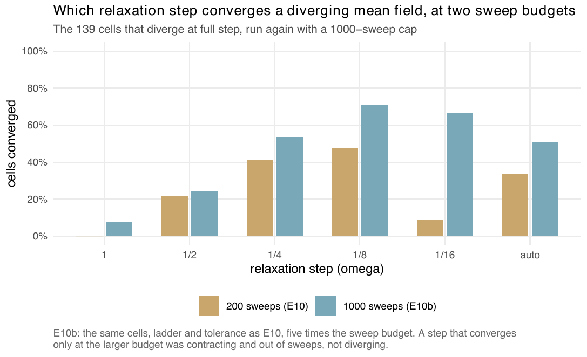

E10 — The relaxation sweep: which step converges the surrogate's mean field, and is "auto" the right default?
| Status | complete, with E10b (the 1000-sweep rerun) |
| Package build | E10: 64edf63 (by the build audit); E10b not recorded |
| Driver / analysis | sim/E10-relaxation.R (E10b: the same driver with --max-sweeps 1000); figures sim/figures-e6e10.R, sim/figures-e15e18.R, sim/figures-study.R |
| Data | results/E10/relaxation.csv (2568 rows), results/E10b/relaxation.csv (846 rows) |
Question
The surrogate proposal needs the expected diversity through time under the current parameters: a fixed point x ← F(x) solved by a backward and a forward Picard sweep. Where the map expands, the sweep diverges and a larger budget makes it worse (audit H108). Under-relaxation takes a partial step, x ← (1 - \(\omega\))x + \(\omega\)F(x); damping = "auto" starts at \(\omega\) = 1, halves whenever the residual grows, and stops at 1/64. "auto" became the default on one diverging case, one contracting case and three gaussian dd cells. Two of those three gaussian cells converged under relaxation, which raised a second question: can the gate that refuses dd on the gaussian link (.bdi_supported) open? That depends on whether the proposal built on a converged mean field is usable, so E10 also samples from it. A first grid with \(\beta\)0 = 0.5 and \(\rho\) = 1 converged at \(\omega\) = 1 in all 54 cells and could answer neither question; the divergences on record need a high absolute rate and, for the gaussian case, incomplete sampling, so both became axes.
Design
| parameter | value | meaning |
|---|---|---|
| tips | 50, 150, 400 | target size of a dd tree |
| turnover | 0.25, 0.9 | \(\gamma\)0 / \(\beta\)0 |
| capacity | n, 3n | as a multiple of the tip count |
| \(\beta\)0 | 0.5, 2, 4 | the absolute rate |
| \(\rho\) | 1, 0.2 | what the sweep is told; the tree is always simulated complete, so \(\rho\) = 0.2 asks it to reconstruct a clade five times the tree |
| link | linear, exponential, gaussian | the same trees serve every link; on the gaussian link the rate peaks at \(\beta\)0 |
| cells | 216 = 3 x 2 x 2 x 3 x 2 x 3 | 3 trees each, 648 units; a cell with no tree in range is recorded, not dropped |
| \(\omega\) | 1, ½, ¼, ⅛, 1/16, "auto" |
the design named 1, ½, ¼, auto; the driver added ⅛ and 1/16 so that "auto" is judged against fixed steps inside its own range |
| sweep cap | 200 (E10); 1000 (E10b) | |
| sampling | 200 draws from the resulting proposal on every unit that converges only under relaxation |
E10b reruns only the units that diverge at \(\omega\) = 1 in E10 (151) at a 1000-sweep cap, same \(\omega\) ladder; 139 of them carry a tree in the rerun (12 rows have none).
A "cell" in the record's counts is one (design cell, tree) unit.
Pre-set rule
E10, decisions without thresholds: whether "auto" is the right default; whether the gaussian gate can open; whether relaxation should be reported to the caller rather than applied silently. E10b (rule): the default is changed to a fixed 1/8 only if "auto" still converges fewer cells at 1000 sweeps than 1/8 does; otherwise it stays and the 200-sweep result is reported as a budget artefact.
Results
384 of 648 units (138 of 216 cells) have a tree. Units converged:
| \(\omega\) = 1 | ½ | ¼ | ⅛ | 1/16 | auto | |
|---|---|---|---|---|---|---|
| E10, 200 sweeps, 384 units | 233 | 266 | 293 | 302 | 81 | 283 |
| E10b, 1000 sweeps, 139 units | 12 | 37 | 81 | 107 | 101 | 77 |
| — linear link (38) | 4 | 4 | 18 | 31 | 31 | 21 |
| — exponential (67) | 4 | 27 | 53 | 65 | 58 | 48 |
| — gaussian (34) | 4 | 6 | 10 | 11 | 12 | 8 |
At 200 sweeps the sweep diverges at full step on 151 units across all three links; of those, ⅛ converges 69 and "auto" 50 (report). "auto" converges no unit that no fixed step converges (recomputed, 0 in both runs), and at 200 sweeps fails on 22 units that a step inside its own range converges, so the halving trigger is what fails. At 1000 sweeps only 12 of "auto"'s failures were still contracting at the cap. Median sweeps to converge at the 1000 cap: 1/16 319, ⅛ 174, ¼ 90, ½ 34, "auto" 127. Shares converged by link at 200 sweeps (none / auto / ⅛): linear 0.70 / 0.78 / 0.88, exponential 0.41 / 0.68 / 0.73, gaussian 0.70 / 0.75 / 0.75.

"auto" in percentage points: +9, +5, 0 at 200 sweeps and +26, +25, +9 at 1000.The proposal on a relaxed mean field. On the units that converge only once relaxed, the effective sample of 200 draws has median 1.12 (90th percentile 3.2) over 195 sampled units in E10, and 1.02 (90th 1.9) over 294 in E10b; by step at 1000 sweeps, ⅛ 1.01, 1/16 1.00, ¼ 1.03, "auto" 1.03.

E10b — the default at a fair budget
E10 had raised a caveat (adversarial review): its verdict was at 200 sweeps, where 1/16 failed mostly by running out of sweeps, and "auto", starting at 1, might be losing to the cap. At 1000 sweeps on the 139 diverging units, ⅛ converges 107 and "auto" 77; ⅛ leads on every link (31 vs 21 linear, 65 vs 48 exponential, 11 vs 8 gaussian). Some fixed step converges every unit "auto" does, and 33 more (record; a recount keyed on cell ids gives 11).

"auto" at both budgets.Conclusion
E10b's rule is met: "auto" converges fewer units than ⅛ at 1000 sweeps (77 against 107 of 139), so by the pre-set rule the default changes to a fixed 1/8, and the 200-sweep result is not a budget artefact. The package source still has damping = "auto" (R/inference.R); the README lists the relaxation default as one of two decisions left to the author. The gaussian gate stays closed: a mean field that converges only under relaxation leaves a median effective sample of 1.02, so convergence and samplability are different properties and the step decides whether the iteration ends, not whether the draws are usable. Whether relaxation should be reported to the caller: no decision recorded. E10 measures the fixed point at given parameters; it says nothing about how often a fit meets a diverging sweep.